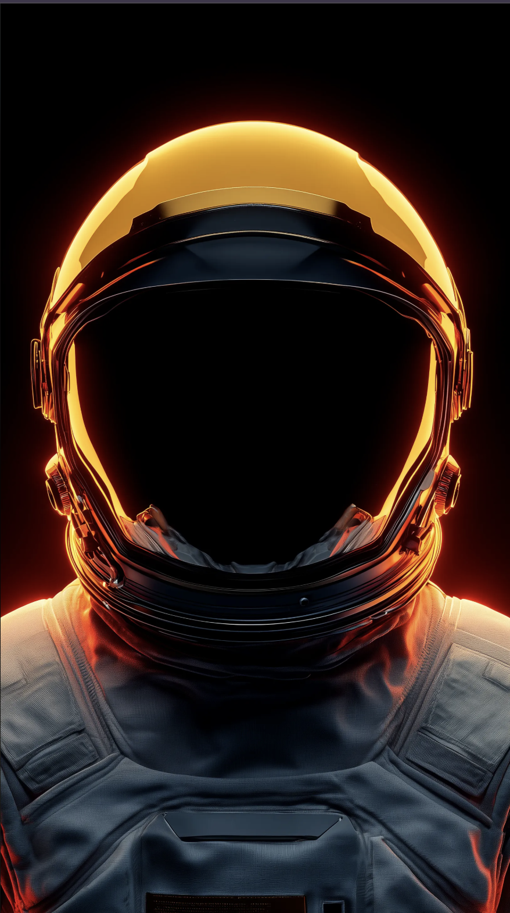

Sales & CRM
Lead routing, enrichment, follow-up sequences, pipeline hygiene, and CRM sync with email, calendar, and Slack.

Software & automation
FIG.AUTO.00 · Execution layer
We design and build software that removes repetitive work, connects fragmented tools, and gives your team reliable execution — not brittle scripts or shelf-ware.
Reference · move the pointer over the portrait field to activate color · execution graph traces on load
Module grid
High-leverage categories we ship repeatedly — each as a sketched system: integrations, rules, UIs, and observability tailored to how you work.
Lead routing, enrichment, follow-up sequences, pipeline hygiene, and CRM sync with email, calendar, and Slack.
Request flows, sign-off chains, ticketing bridges, and audit-friendly handoffs between teams and tools.
Live views of KPIs, scheduled digests, spreadsheet and warehouse sync, and exec-ready rollups.
Classification, drafting, extraction, and routing with human-in-the-loop gates and policy boundaries.
Custom portals, internal consoles, and lightweight SaaS surfaces — auth, roles, billing hooks, and integrations to your stack.
Execution pathway
Discovery through scale — one continuous blueprint. Path traces as you scroll.
01
Discover
02
Map
03
Logic
04
Integrate
05
Automate
06
Observe
07
Scale
Capability matrix
Custom products and platforms — authored for your process, not a template catalog.
Internal tools & ops consoles
Role-based tools for fulfillment, support, finance, and logistics.
Client portals & dashboards
Branded entry points for customers and partners with clean permissions.
Marketplaces & B2B platforms
Listings, checkout, and operator workflows in one system.
Workflow engines & orchestration
Long-running jobs, retries, and human approvals with full traceability.
Data systems & reporting layers
Pipelines, models, and readouts your team actually uses.
AI copilots & assistants
Grounded in your documents and APIs — with review gates.
Proof · portfolio
Tiles ride a wider ellipse around a center brief panel — mono by default, full color on focus. Hover any frame to pause the orbit: a one-line label types out beneath the frame while the brief runs inside the core.
〈 hover a drifting tile 〉
Operational proof
Fewer manual steps
Repeatable work moves into rules and jobs your team trusts.
Faster response
Routing and alerts cut time-to-action across channels.
Better visibility
One place to see pipeline, workload, and exceptions.
Cleaner workflows
Handoffs are explicit; less shadow IT and fewer side channels.
Reliable execution
Idempotent jobs, monitoring, and runbooks — not heroics.
Scalable leverage
Systems grow with volume without linear headcount.
Bring a workflow, a brittle spreadsheet, or a greenfield idea — we translate it into a sketched architecture, then ship software and automation that holds up in production.